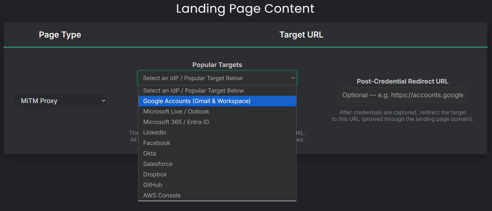
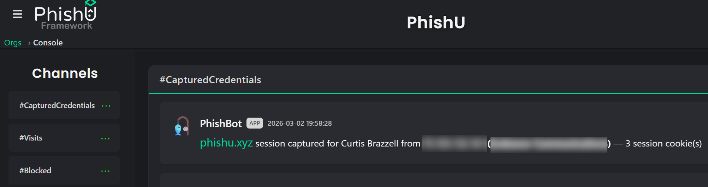
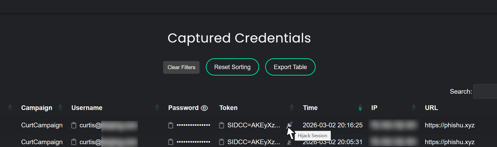
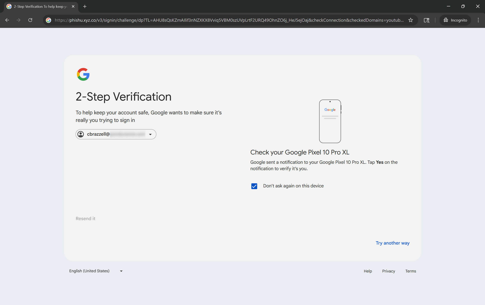

Most phishing simulation platforms stop at the click. A user opens an email, taps a link, and the report says they failed. That may be enough for a compliance dashboard, but it is not enough to show what a real attacker could do next.
The PhishU Framework now puts transparent Adversary-in-the-Middle, or AiTM, proxying behind a click of a button. Instead of stitching together separate tools, writing phishlets, and keeping up with browser changes by hand, operators can launch an authorized AiTM assessment from the same platform they already use for domains, landing pages, email delivery, analytics, training, and reporting.
That matters because AiTM is where phishing turns from a user-awareness problem into a business-risk problem. If a target signs in through the proxy, the operator can capture the login flow, collect the resulting session material, and demonstrate what actual account takeover risk looks like in practice.

What Transparent AiTM Proxying Means
At a high level, transparent proxying places the phishing infrastructure in the middle of the login conversation. The target believes they are interacting with a familiar sign-in experience. The real identity provider still receives the authentication traffic. The difference is that the proxy is in the path, observing the exchange and capturing the pieces that matter for a defender-led assessment.
In the PhishU Framework, that capability is built into the product. There is no need to stand up separate infrastructure, babysit configuration files, or bolt on external reporting after the fact. The operator works inside the same interface used for the rest of the phishing workflow.
That single workflow is a big part of the value. The hard part has never been understanding what an AiTM proxy is. The hard part has been getting one working reliably, keeping it alive, and integrating it into an engagement that still needs domains, email, tracking, evidence, and training. PhishU handles that end to end.
From Click to Session Hijack, in One Workflow
When defenders talk about phishing risk, stakeholders often hear one thing: someone clicked. That is not the same as showing that a real account could be taken over. AiTM changes that. If the target successfully authenticates through the proxy, the framework can capture the resulting session data and let the operator demonstrate downstream access risk with a point-and-click session jump.
That is a very different conversation with a client, executive team, or internal security stakeholder. A report that says, "an employee entered credentials" gets attention. A report that shows, "this is the inbox, tenant access, or cloud session an attacker could have used next" gets action.
Inside the PhishU Framework, that workflow is deliberately simple. The operator sees the captured session appear in the interface, gets a real-time notification that the authentication succeeded, and can use the built-in Session Hijacking option to jump directly into the authenticated session from within the Framework workflow. That one-click handoff is a big part of what makes the capability practical. It turns a technically complex attack path into evidence a client can understand immediately.


That is also why this capability belongs in a phishing platform built for red teams, pentest firms, MSSPs, and internal security teams. It closes the gap between generic awareness testing and realistic adversary emulation.
Support for Major Identity Providers, Including Google
The Framework's transparent proxy capability is designed for the identity platforms organizations actually use. That includes major IdPs and cloud login experiences such as Google. For defenders, that matters because the value of a phishing assessment rises sharply when it tests real authentication surfaces instead of toy examples.
Google is a good example. Security teams already know Google sign-in flows are not simple static login pages. They involve modern browser behavior, evolving authentication steps, and active anti-phishing controls. Supporting that environment is not a checkbox feature. It is a sign that the platform is being maintained against real-world sign-in surfaces, not abandoned after a demo.
PhishU's approach is not to expose all of that complexity to the operator. The point is the opposite. The platform absorbs the complexity so the operator can run an authorized assessment without becoming a full-time Evilginx maintainer.

How It Deals with Chrome's Built-In Phishing Heuristics
One of the biggest problems in modern phishing infrastructure is not just the mail gateway. It is the browser. Chrome applies local and real-time phishing heuristics that can generate warnings when a non-Google domain serves content that looks too much like a Google sign-in experience. Any platform that claims to support realistic AiTM testing against major IdPs has to deal with that reality.
PhishU does. The Framework is engineered to evade Chrome's built-in phishing heuristics, and those protections are actively maintained as browser detection changes over time. That is a major advantage of using a hosted platform instead of rolling your own toolkit. When the browser environment shifts, the customer does not need to reverse-engineer the change and rebuild their own infrastructure. The platform adapts centrally.
It is important to be precise here. No honest vendor should promise permanent or universal browser evasion. Detection logic changes. Browsers evolve. The right claim is that PhishU treats browser-level detection as an engineering problem that is continuously maintained, and that the current approach has been consistently effective in testing. That is the standard defenders should expect.
Why This Matters More Than a Generic Phishing Click Report
Most phishing programs are built to count clicks and assign training. That has value, but it does not answer the question security leaders actually care about: what happens if a real phish gets through?
Transparent AiTM proxying helps answer that question in a way a generic simulation cannot. It shows whether modern authentication flows can be abused, whether MFA meaningfully changes the outcome, and whether session theft remains a real exposure path in the target environment. It turns phishing from a lightweight awareness exercise into a deeper control-validation exercise.
For service providers, it also changes the economics of phishing work. Instead of juggling separate tools for delivery, proxying, reporting, and training, the operator can work from one hosted platform. That reduces setup time, reduces operational drag, and makes higher-value social engineering work easier to deliver repeatedly.
No Phishlets, No YAML, No Duct Tape
A lot of practitioners know the pain of maintaining phishing infrastructure by hand. One tool handles email. Another handles proxying. Another handles reporting. Then Chrome changes behavior, Google changes a login flow, or a landing page gets burned, and the whole stack needs attention again.
The PhishU Framework is built to remove that glue work. Operators do not need to manage phishlets, YAML files, or custom infrastructure just to run a realistic AiTM assessment. The result is a cleaner path from idea to campaign, and a much better path from campaign to usable evidence.
That is one reason this capability matters beyond internal awareness teams. Pentest firms, red teams, and MSSPs need workflows they can operate at client scale. A point-and-click transparent proxy inside a broader phishing platform is a much more practical answer than another standalone research tool.
Where This Fits in the Bigger PhishU Story
AiTM proxying is not a party trick, and it should not be treated like one. It is one part of a realistic phishing workflow that also includes domain setup, deliverability engineering, landing page control, browser-warning evasion, analytics, targeted training, and reporting that decision-makers can actually use.
That combination is what makes the Framework different. The goal is not to give defenders a pile of offensive techniques. The goal is to give them a controlled, authorized, usable way to test phishing resilience under real conditions and then do something useful with the results.
If a platform can show that an email landed, a user authenticated, and a session could be reused, that is not fear-based marketing. That is the exact kind of evidence security programs need to prioritize the next fix.
Want to see it in action?
PhishU supports realistic phishing assessments, targeted training, and point-and-click AiTM session hijacking for authorized engagements. If you want to test what a real phishing attack could do in your environment, start there.
Request a Quote